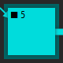
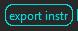
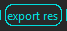
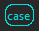
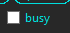
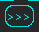
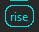
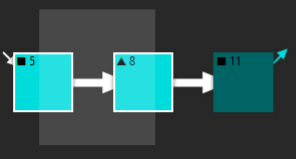
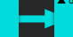

Howstr
Putting the 'easy' in hardware.
Project maintained by matthewmaier Hosted on GitHub Pages — Theme by mattgraham
Welcome to Howstr's project page
- Windows and Controls
- Main Window
- preInfo
 Preview indicating that if you releaes the left mouse button the node details for this node will open.
Preview indicating that if you releaes the left mouse button the node details for this node will open. - preFocus  Preview indicating that if you releaes the left mouse button this node will become the "focused" node. When the graph is redrawn the algorithm will start at this node and work outwards. Any graph element not connected to the focus node by flow links will be placed in the miscellaneous pool at the bottom of the main window.
- iconMediumsize
 Click this icon to make the main window take up part of the screen (instead of being minimized or maximized).
Click this icon to make the main window take up part of the screen (instead of being minimized or maximized). - iconClose
 Click this icon to close Howstr Desktop. You will be prompted to save if the current project has unsaved changes. The application always loads with a fresh project, which triggers the "do you want to save" prompt upon closing, but there is no need to save this default project.
Click this icon to close Howstr Desktop. You will be prompted to save if the current project has unsaved changes. The application always loads with a fresh project, which triggers the "do you want to save" prompt upon closing, but there is no need to save this default project. - iconHelp Click this icon to bring up helpful information. The helpfulness of the information may vary.
- iconMaximize
 Click this icon to make the main window take up the whole screen.
Click this icon to make the main window take up the whole screen. - iconMinimize
 Click this icon to make the main window disappear. (It's like magic, but actually it's just advanced technology)
Click this icon to make the main window disappear. (It's like magic, but actually it's just advanced technology) - iconUndo
 Click this icon to undo the most recent change to the network. NotionAll is add-only, so this will add an event which negates the pointers to the last change. You can "undo" everything that has ever happend in a project by adding a sufficiently long string of undo events. You can then redo everything that ever happened, all the way back to where you started, as long as you don't add some new event (which would break the chain).
Click this icon to undo the most recent change to the network. NotionAll is add-only, so this will add an event which negates the pointers to the last change. You can "undo" everything that has ever happend in a project by adding a sufficiently long string of undo events. You can then redo everything that ever happened, all the way back to where you started, as long as you don't add some new event (which would break the chain). - Instructions Button  Click this button to generate and export an up-to-date set of instructions. The instructions are algorithmically created out of the action groups in the network. The exported *.html file is placed into the project folder.
- Resources Button  Click this button to generate and export an up-to-date list of resources. The resource list has inputs (a bill of materials), thruputs (any excess stuff not entirely used up during an action), and outputs (what the project creates). The exported *.html file is placed into the project folder. NOTE: the calculation does not distinguish between tools (stuff that gets reused, like a hammer) and materials (stuff that get used up, like nails). It should be obvious in most cases that you don't need dozens of hammers, but it is an incorrect multiple.
- Save As Button
 Click this button to save the project under a new name.
Click this button to save the project under a new name. - Load Button
 Click this button to close the current project and open a previously saved project.
Click this button to close the current project and open a previously saved project. - Hide Button
 Click this button to hide the currently selected graph element(s). NotionAll is add-only, so nothing is ever deleted. Instead, the pointers that tell the algorithms to include it in the network are negated.
Click this button to hide the currently selected graph element(s). NotionAll is add-only, so nothing is ever deleted. Instead, the pointers that tell the algorithms to include it in the network are negated. - Tooltip Checkbox
 Check this box to have a tooltip follow the mouse and display the contents of the nodes and the weight of the links. Uncheck to dismiss the tooltip.
Check this box to have a tooltip follow the mouse and display the contents of the nodes and the weight of the links. Uncheck to dismiss the tooltip. - Case Button  Click this button to bring up a prompt to change the title of the case node. The case node title is different from the file name of the project.
- Busy Checkbox  Some of the functions are intensive, so when they start they flag the system as "busy." In testing sometimes a function would get stuck, and so would the "busy" flag. If the user interface freezes, try checking and unchecking this box to clear the "busy" flag.
- Miscellaneous Left Button
 Click this button to scroll the miscellanous pool left.
Click this button to scroll the miscellanous pool left. - Miscellaneous RIght Button  Click this button to scroll the miscellanous pool Right.
- Dive Link Button
 Click this button to create a dive link from the case node to the selected node. It's important for this link to be in the right place so the algorithms work. Basically, a dive link specifies the beginning of a project.
Click this button to create a dive link from the case node to the selected node. It's important for this link to be in the right place so the algorithms work. Basically, a dive link specifies the beginning of a project. - Rise Link Button  Click this button to create a rise link from the selected node to the case node. It's important for this link to be in the right place so the algorithms work. Basically, a rise link specifies the end of a project.
- Jeremy's Bug Checkbox
 Jeremy used Howstr on Linux. Jeremy's mouse didn't work correctly. Jeremy and Matt discovered that Linux increments the mouse button numbers by one. If your mouse buttons don't work correctly, try checking the box.
Jeremy used Howstr on Linux. Jeremy's mouse didn't work correctly. Jeremy and Matt discovered that Linux increments the mouse button numbers by one. If your mouse buttons don't work correctly, try checking the box. - Filename Label
 If the current project has been saved then its filename will appear here.
If the current project has been saved then its filename will appear here. - Selection Box  Click and drag the right mouse button. Nodes and links are highlighted white when they're selected. Selecting a node automatically selects all of the links attached to it. Right click anywhere in the background to clear the selection.
- Tooltip
 When the tooltip checkbox is checked the tooltip will follow the mouse around and display whatever is inside of the node/link the mouse hovers over.
When the tooltip checkbox is checked the tooltip will follow the mouse around and display whatever is inside of the node/link the mouse hovers over. - Node Graphic
 Nodes are represented by boxes. States have a squre character and changes have a triangle character. They resize a bit to try to fit a preview of their contents.
Nodes are represented by boxes. States have a squre character and changes have a triangle character. They resize a bit to try to fit a preview of their contents. - Flow Link Graphic  Flow links specify precedence relationships and are drawn left-to-right. So the left thing has to happen before the right thing can happen. Another way to think of it is supply/demand. The stuff to the right demands something through the flow link and the stuff on the left supplies it through the flow link.
- Preview Graphics
 The network has to be constructed according to a certain pattern for the algorithms to work. Howstr makes building a canonical network easy by restricting you to a few correct options. The options are displayed in a preview. If a preview is showing, then releasing the mouse button will commit the preview. Move the mouse to directly under/over a node to clear the preview.
The network has to be constructed according to a certain pattern for the algorithms to work. Howstr makes building a canonical network easy by restricting you to a few correct options. The options are displayed in a preview. If a preview is showing, then releasing the mouse button will commit the preview. Move the mouse to directly under/over a node to clear the preview. - Node Details
- iconCancel
- iconOkay
- snapCaptureButt
- setCaptureButt
- expandImgButt
- clearImgButt
- loadImgButt
- figureHolder
- editData
- tagLabel
- tagDataList
- Figure View
- zoomOutButt
- zoomInButt
- figureFull
- Capture Area
- setCaptureIcon
- exitCaptureIcon
- Actions
- Terms
Howstr is a revolutionary way to share and discover tangible projects. It's an MIT licensed open source project hosted here.
Howstr Desktop Beta
Download the latest release of Howstr Desktop Beta for your system (no install required).
Get started
1) extract the files. 2) run the executable 3) follow the Quick Start Guide
Resources
Check out the dictionary for all the details.